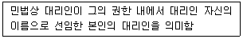
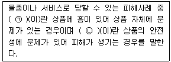
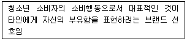
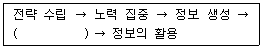
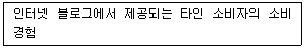
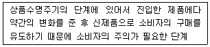
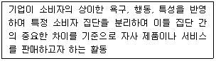
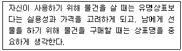

소비자전문상담사-2급 (2020-08-22 기출문제)
1과목: 소비자상담 및 피해구제
1. 소비자상담사가 갖추어야 할 기초능력과 가자아 거리가 먼 것은?
- 의사소통능력
- 문제해결능력
- 대인관계능력
- 기업중심적 사고능력
(정답률: 89%)

2. 소비자상담 시 말하기에 대한 기법으로 효과적인 방법과 거리가 먼 것은?
- 소비자가 사용하는 언어를 사용한다.
- 소비자와 공감을 갖기 위해 장황하게 이야기 한다.
- 부정적인 단어 사용을 삼가한다.
- 상담의 진행을 위하여 유도성 질문을 이용한다.
(정답률: 80%)
3. 국가고객만족지수(NCSI: national customer satisfaction index)에 대한 설명으로 가장 거리가 먼 것은?
- 기업을 비롯하여 산업, 경제부문, 국가차원의 품질경쟁력을 향상시키려는 목적으로 만들어졌다.
- 구성요소 간의 인과관계를 종합적으로 분석할 수 있어 신뢰도와 완성도가 높은 반면, 고객만족도의 변화와 수익성에 대한 상관관계 분석이 불가능하다.
- 고객만족을 추구하고 관리하기 위한 것으로 정확한 고객만족도를 특정할 수 있는 지표를 제공하며 나아가 기업의 성과도를 측정할 수 있는 중요한 수단이다.
- 최소측정 단위는 개별기업이 생산하는 제품 또는 제품군이며, 측정결과는 개별기업, 산업, 경제부문, 그리고 국가 단위로 발표된다.
(정답률: 69%)
4. 소비자관련법 중 국가 및 지방자치단체가 소비자의 기본적 권리 실현을 위해 필요한 행정조직의 정비 및 운영 개선의 책무가 있다고 규정한 것은?
- 민법
- 소비자기본법
- 소비자분쟁해결기준
- 약관의 규제에 관한 법률
(정답률: 87%)
5. 콜센터가 지향해야 할 역할 및 기능에 대한 설명으로 가장 거리가 먼 것은?
- 상품이나 서비스에 대해 고객의 요구를 해결해 주거나 정보서비스를 제공해준다.
- 고객을 관리하고, 자사 수익을 올리 수 있도록 유도할 수 있는 마케팅 일선창구이다.
- 전화응답센터 기능 수행을 위해 궁극적으로 인건비나 유통망의 구축비용 절감 중심으로 운영해야 한다.
- 이미지나 동영상을 통해 정보를 제공하는 멀티미디어 기능이 추가되어 운영되어야 한다.
(정답률: 73%)
6. 콜센터의 아웃바운드 상담 활동으로 가장 적합한 것은?
- 주문접수 및 A/S 접수
- 주문, 예약, 예매 처리 업무
- 우량고객에 대한 고객마인드 콜
- 고객불만사항에 대한 접수 및 처리
(정답률: 70%)
7. 소비자가 방문판매로 제품을 구매했을 경우, 청약철회와 관련한 내용으로 틀린 것은?
- 제공받은 제품을 개봉하고 사용하여 그 가치가 현저히 낮아져도 14일 이내에 청약철회를 할 수 있다.
- 사업자 주소가 변경된 경우 주소를 알 수 있었던 날로부터 14일 이내에 청약철회를 할 수 있다.
- 계약서를 받은 날로부터 14일 이내에 청약철회를 할 수 있다.
- 계약 내용과 다르게 이행된 경우 그 재화 등을 공급받은 날부터 3개월 이내, 그 사실을 안 날로부터 30일 이내에 청약철회를 할 수 있다.
(정답률: 75%)
8. 국내 콜센터의 특징으로 가장 거리가 먼 것은?
- 콜센터에서 처리하는 콜의 유형은 대부분이 인바운드 콜이다.
- 콜센터를 아웃소싱하는 경우가 증가하고 잇는 추세이다.
- 우리나라는 영국, 미국 등과 비교해봣을 때 콜센터 산업이 충분히 성숙된 상태이다.
- 콜센터 인바운드의 주요업무는 불만상담, 서비스 문의응대, 상품상담 등이다.
(정답률: 71%)
9. 소비자상담결과가 기업경영에 반영되기 위해서 기업의 소비자전담부서에 주어져야 할 권한과 기능에 대한 설명 중 가장 거리가 먼 것은?
- 소비자불만이나 문제를 해결 및 관리할 수 있는 권한이 주어져야 한다.
- 사회적 목표가 아닌 기업내부의 목표에 따라 활동과 업적을 평가해야 한다.
- 정책 수립 시 소비자를 대변하여 마케팅 프로그램에 대해 독자적 평가를 할 수 있어야 한다.
- 소비자의 제품 만족도를 파악하고 소비자 불만요소를 탐색할 수 있는 정보 시스템이 있어야 한다.
(정답률: 62%)
10. 고객과의 의사소통에서 메시지 전달에 가장 큰 영향을 미치는 비언어적 의사소통기술은?
- 사용하는 단어
- 언어의 높낮이와 속도
- 얼굴표정 및 몸짓
- 상대방과의 거리
(정답률: 73%)
11. 소비자와 사업자가 체결한 계약에 관한 설명으로 가장 거리가 먼 것은?
- 계약의 해제는 계속적 계약에 있어서 계약의 효력을 장래에 향하여 소멸시키는 계약당사자의 일방적 의사표시이다.
- 계약취소에서 무능력자, 하자 있는 의사표시를 한 소비자와 대리인 또는 승계인은 취소권자로서 취소할 수 있다.
- 청약철회권은 민법상 계약의 원칙에 의하면 성립되지 않지만 소비자관련법에서는 예외적으로 청약철회권을 규정하고 있다.
- 계약의 무효란 계약이 성립된 때부터 법률성 그 효력이 발생하지 않는 것을 의미한다.
(정답률: 54%)
12. 방문판매 등에 관한 법률상 다단계판매업자의 의무가 아닌 것은?
- 소비자단체에 등록할 의무
- 설명 또는 표시한 거래조건을 신의에 좇아 성실히 이행할 의무
- 계약내용의 설명 의무
- 계약서 작성 교부 의무
(정답률: 75%)
13. 세탁서비스와 관련된 피해구제 내용 중 가장 거리가 먼 것은?
- 소비자가 투피스, 양복처럼 한 벌 옷 중 일부만을 세탁소에 맡긴 후 의류가 손실된 경우, 한 벌을 기준으로 손해배상 받도록 되어 있다.
- 세탁업자가 세탁물을 찾아가라고 서면으로 통지한 후 30일이 지나도 소비자가 찾아가지 않으면 업자는 책임지지 않도록 되어 있다.
- 세탁물을 세탁한 후 소비자피해가 발생하였는데 그 원인이 의류제조자의 책임인 것으로 나타난 경우 제조자가 피해보상을 해야 한다.
- 세탁업자는 세탁물 인수 시 세탁물의 하자여부를 서면으로 확인하고 명시하지 않을 경우 분쟁발생 시 세탁업자가 배상의무를 지도록 되어 있다.
(정답률: 60%)
14. 소비자분쟁해결기준상의 부품보유기간에 대한 설명으로 틀린 것은?(오류 신고가 접수된 문제입니다. 반드시 정답과 해설을 확인하시기 바랍니다.)
- 사업자가 해당 제품의 생산을 중단한 시점으로부터 기산한다.
- 원칙적으로 해당 제품의 제조일자를 기산점으로 한다.
- 자동차는 동일한 형식의 자동차를 최종 판매한 날부터 기산한다.
- 사업자가 부품보유기간을 표시하지 아니한 경우에는 품목별 소비자분쟁해결기준에 따른다.
(정답률: 55%)
15. 소비자와 사업자 사이에 발생하는 분쟁을 원활하게 해결하기 위하여 대통령령이 정하는 바에 따라 소비자분쟁해결기준을 제정하는 기관은?
- 공정거래위원회
- 식약처
- 소비자안전센터
- 한국소비자원
(정답률: 58%)
16. 구매 전 소비자상담의 내용과 가장 거리가 먼 것은?
- 구매계약서 작성방법
- 제품의 중요 부품설명
- 판매점 등의 각종 시장정보
- 다양한 판매방법 및 지불방법 정보
(정답률: 49%)
17. 해외구매 대행 사이버몰을 이용하여 물품을 구매할 경우에 대한 주의점에 대한 설명으로 가장 거리가 먼 것은?
- 해외배송 등을 이유로 주문취소, 반품, 환불이 되지 않는다고 사전 고지하는 경우 국제법이 적용되어 청약철회가 인정되지 않으므로 주의해야 한다.
- 단순변심 등 소비자의 사정으로 인한 반품 시 왕복국제 운송료 등(많은 경우 구매대금의 40 ~ 60%)을 부담하여야 하므로 신중한 선택이 필요하다.
- 외국제품들은 국내제품과 치수 기준이 다르고, 디자인 및 브랜드에 따라서도 치수 차이가 있을 수 있으므로 사이즈가 맞지 않아 반품하는 것은 단순변심에 의한 청약철회에 해당된다.
- 환율변동, 관세율표 개정, 전산시스템 오류 등으로 인해 소비자가 지불한 금액과 구매대행 통신판매업자가 실제 사용한 비용의 차이가 발생하는 경우에 결제대금의 ±5% 오차범위를 초과하는 경우 사후 정산을 요구할 수 있다.
(정답률: 64%)
18. 소비자상담 및 피해구제 방법을 기관에 따라 분류할 때 소비자피해구제를 위한 가장 최종적인 방법이자 해결의 기준으로 제시될 수 있는 것은?
- 법원에 의한 피해구제
- 사업가에 의한 피해구제
- 소비자단체에 의한 피해구제
- 한국소비자원에 의한 피해구제
(정답률: 73%)
19. 다양한 상담 기관과 해당기관의 소비자상담역할에 대한 설명으로 가장 적합하지 않은 것은?
- 기업: 소비자가 적절한 피해보상을 받을 수 있는 바람직한 구제방법을 모색한다.
- 소비자단체: 소비자들에게 다양한 정보를 제공하고, 지역사회 발전에 기여하도록 한다.
- 한국소비자원: 마지막 피해구제를 받을 수 있는 곳으로 소송을 통한 해결방법을 모색한다.
- 법원: 소비자피해구제를 위한 궁극적인 방법으로 사법절차를 통한 해결방법이 있다.
(정답률: 62%)
20. 소비자의 행동스타일별 일반적인 행동경향으로 틀린 것은?
- 단호한 행동스타일 – 즉각적인 욕구충족을 추구하며, 제한된 비언어적 표현을 사용함
- 호기심 많은 행동스타일 – 친근감 있는 태도를 보이며, 구체적이고 완전한 설명을 추구함
- 합리적인 행동스타일 – 갈등을 회피하고 화를 내지 않으며, 말보다는 주로 듣고 관찰함
- 표현적인 행동스타일 – 활발하게 말하며, 개방적인 신체언어나 몸짓을 사용함
(정답률: 60%)
21. 소비자상담이 필요한 배경에 대한 설명 중 가장 거리가 먼 것은?
- 소비자측면에서 복잡한 경제구조 속에서 소비자의 선택과 의사결정의 조력자 필요
- 기업측면에서 고객 지향적으로 소비자와 기업 간의 통로기능 필요
- 소비자측면에서 복잡한 시장 환경으로 예산수립 정보탐색, 대안평가, 구매에 대한 정보가 다방면으로 필요
- 기업측면에서 소비자보호를 위한 정책적이고 제도적장치의 필요
(정답률: 38%)
22. 소비자상담사에게 요구되는 전문적인 능력과 가장 거리가 먼 것은?
- 공정하고 객관적인 판단 능력
- 의사소통기법
- 문제해결에 필요한 지식
- 상담의 핵심원리의 이해도
(정답률: 53%)
23. 인터넷을 통한 소비자 상담의 활성화를 위해 수행해야 할 과제로 가장 거리가 먼 것은?
- 인터넷상담 화면의 적절한 구성
- 세분화된 상담 홈페이지의 개발
- 인터넷상 유관기관과의 활발한 협조
- 홈페이지 내 전문상담 내용의 고정화
(정답률: 68%)
24. 기업의 고객만족 조사를 하는 본질적인 목적과 가장 거리가 먼 것은?
- 고객감소의 원인 파악
- 기업의 수익성 증가
- 일부 직원의 동기화 유도
- 기존 고객유지를 위한 정보 획득
(정답률: 73%)
25. 소비자분쟁해결기준상의 품목별 소비자 분쟁해결기준에 대한 설명으로 틀린 것은?
- 도서나 음반류는 파손이 되어 있거나 녹음 및 녹화 상태가 불량일 경우 교환이 가능하다.
- 자동차의 경우 차량인도일부터 2개월 이내에 중대한 결함이 발생한 경우 교환이 가능하다.
- 스포츠 및 레저용품의 경우 품질보증기간 이내에 정상적 사용 상태에서 발생한 기능상의 하자는 무상 수리를 받을 수 있다.
- 가전제품의 경우 구입 후 1개월 이내에 정상적 사용 상태에서 발생한 기능상의 하자로 중요한 수리를 요하는 경우 제품교환이 가능하다.
(정답률: 58%)
2과목: 소비자 관련법
26. 약관의 규제에 관한 법률상 표준약관에 관한 설명으로 틀린 것은?
- 한국소비자원은 소비자 피해가 자주 일어나는 거래 분야에서 표준이 될 약관을 제정 또는 개정할 것을 공정거래위원회에 요청할 수 있다.
- 공정거래위원회는 표준약관을 공시(公示)하고 사업자 및 사업자단체에 표준약관을 사용할 것을 권장할 수 있다.
- 공정거래위원회로부터 표준약관의 사용을 권장받은 사업자는 표준약관과 다른 약관을 사용하는 경우 표준약관과 다르게 정한 주요 내용을 고객이 알기 쉽게 표시하여야 한다.
- 표준약관을 사용하지 않는 사업자가 표준약관 표지(標識)를 사용하는 경우 그 약관의 전체 내용은 무효로 한다.
(정답률: 71%)
27. 표시·광고의 공정화에 관한 법률상 현재까지 제정된 고시 또는 기준이 아닌 것은?
- 부당한 표시·광고행위의 유형 및 기준 지정고시
- 환경관련 표시·광고에 대한 심사지침
- 금융상품 등의 표시·광고에 관한 심하지침
- 어린이대상 표시·광고에 관한 심사지침
(정답률: 56%)
28. 민법상 법률행위의 효력이 무효인 것은?
- 착오에 의한 법률행위
- 사기에 의한 법률행위
- 반사회질서인 법률행위
- 행위무능력자가 단독으로 한 법률행위
(정답률: 30%)
29. 전자상거래 등에서의 소비자보호에 관한 법률상 소비자가 계약체결 전에 재화 등에 대한 거래조건을 정확하게 이해하고 실수 또는 착오 없이 거래할 수 있도록 통신판매업자가 적절한 방법으로 표시·광고하거나 고지하여야 할 내용이 아닌 것은?
- 소비자피해보상에 관한 사항
- 거래에 관한 약관
- 재화의 교환·반품·대금환불의 조건 및 절차
- 통신판매중개자의 성명 및 주소
(정답률: 50%)
30. 소비자기본법에서 규정하고 잇는 소비자의 기본적 권리가 아닌 것은?
- 물품 또는 용역으로 인한 생명·신체 또는 재산에 대한 위해로부터 보호받을 권리
- 물품 또는 용역을 사용함에 있어서 거래 상대방·구입장소·가격 및 거래조건 등을 자유로이 선택할 권리
- 소비자 스스로의 권익을 증진하기 우하여 단체를 조직하고 이를 통하여 활동할 수 있는 권리
- 물품 또는 용역을 사용할 때의 지시사항이나 경고 등 표시할 내용과 방법의 기준을 정할 권리
(정답률: 63%)
31. 할부거래에 관한 법률상 매수인의 철회권에 관한 설명으로 틀린 것은?
- 매수인의 의사표시에 아무런 하자가 없어도 숙고기간 내에는 원칙적으로 철회권이 인정된다.
- 계약서를 교부받을 날보다 재화등의 공급이 늦게 이루어진 경우 계약서를 교부받은 날부터 7일 이내에 철회할 수 있다.
- 청약의 철회를 하고자 할 때에는 그 의사표시가 기재된 서면을 발송하여야 한다.
- 신용제공자가 있는 경우 신용제공자에게도 철회의 의사표시가 기재된 서면을 발송하여야 한다.
(정답률: 37%)
32. 전자상거래 등에서의 소비자보호에 관한 법률상 통신판매중개업에 대한 설명 중 틀린 것은?
- 통신판매중개는 사이버몰의 이용을 허락하거나 그 밖에 법령이 정하는 방법에 의하여 거래 당사자간의 통신판매를 알선하는 행위를 말한다.
- 통신판매 거래의 알선 방법에는 자신의 명의로 통신판매를 위한 광고수단을 제공하거나 그러한 광고수단에 자신의 이름을 표시하여 통신판매에 관한 정보의 제공이나 청약의 접수 등 통신판매의 일부를 수행하는 것도 있다.
- 통신판매중개자의 고의 또는 과실로 소비자에게 재산상 손해가 발생한 경우 사업자인 통신판매중개의뢰자는 원칙적으로 책임을 부담하지 않는다.
- 통신판매중개를 업으로 하는 자는 통신판매의 중개를 의뢰한 사업자의 성명, 주소, 전화번호 등의 사항을 확인하여 청약이 이루어지기 전까지 소비자에게 제공하여야 한다.
(정답률: 58%)
33. 방문판매 등에 관한 법률상 방문판매에 대한 설명으로 틀린 것은?
- 방문판매원을 두지 않는 소규모 방문 판매업자는 공정거래위원회에 신고하여야 한다.
- 방문판매업자는 소비자피해를 방지하거나 구제하기 위하여 소비자가 요청하면 언제든지 소비자로 하여금 방문판매원의 신분을 확인할 수 있도록 하여야 한다.
- 방문판매의 방법으로 재화 등의 구매에 관한 계약을 체결한 소비자는 계약서를 받은 날부터 14일 이내에 그 계약에 관한 청약철회를 할 수 있다.
- 방문판매자 등은 재화 등을 반환받은 날부터 3영업일 이내에 이미 지급받은 재화 등의 대금을 환급하여야 한다.
(정답률: 48%)
34. 방문판매 등에 관한 법률상 소비자 권익의 보호 장치가 아닌 것은?
- 소비자보호지침
- 소비자피해보상보험계약
- 방문판매 표준약관의 보급
- 공제조합
(정답률: 33%)
35. 제조물책임법상 제조물책임에 관한 내용으로 틀린 것은?
- 제조물책임은 일반적 불법행위책임의 일종이다.
- 결함 발생에 제조업자의 고의·과실 여부를 고려하지 않는다.
- 당해 제조물에 대해서만 손해가 발생한 경우에는 적용되지 않는다.
- 결함과 손해와의 인과관계가 존재해야 한다.
(정답률: 38%)
36. 약관의 의의에 관한 설명으로 옳은 것은? (단, 법령에서 규정하지 않은 것은 판례에 따른다.)
- 구체적인 거래에서 당사자 쌍방이 개별적으로 합의한 내용은 약관이 아니다.
- 약관은 해당 명칭과 조문을 갖고 있어야 한다.
- 단일 또는 소수의 특정계약을 위해 준비된 것도 약관에 해당한다.
- 사업자와 고객의 교섭에 의해 변경된 약관 조항도 약관에 해당한다.
(정답률: 28%)
37. 전자상거래 등에서의 소비자보호에 관한 법률상 적용제외대상에 관한 설명 중 틀린 것은?
- 사업자라 하더라도 사실상 소비자와 같은 지위에서 다른 소비자와 같은 거래조건으로 거래하는 경우에는 이 법이 적용된다.
- 통신판매업자가 아닌 자 사이의 통신판매 중개를 하는 통신판매업자에 대하여는 청약철회 규정(제18조)을 적용하지 아니한다.
- 대통령령으로 정하는 금융회사 등이 하는 금융상품거래에 대하여는 통신판매업 신고(제12조) 규정을 적용하지 아니한다.
- 방문판매 등에 관한 법률상 다른 방법에 의한 계약서 교부의무가 규정되어 있는 경우 이 법의 서면 교부의무에 관한 규정은 적용하지 아니한다.
(정답률: 28%)
38. 소비자기본법상 소비자단체소송의 원고저격에 해당하는 기관이 아닌 것은?
- 한국공정거래조정원
- 대한상공회의소
- 중소기업현동조합중앙회
- 한국무역협회
(정답률: 43%)
39. 할부거래에 관한 법률상 여신전문금융업법에 따른 신용카드가맹점과 신용카드 회원 간의 간접할부계약 체결 시 서면에 포함하지 않아도 되는 사항은?
- 각 할부금의 지급시기
- 재화등의 종류·내용 및 재화 등의 공급시기
- 소비자의 항변권과 항변권 행사방법에 관한 사항
- 재화의 소유권 유보에 관한 사항
(정답률: 32%)
40. 방문판매 등에 관한 법률상 방문판매자의 금지행위가 아닌 것은?
- 본인의 허락 하에 소비자에 관한 정보를 제3자에게 제공하는 행위
- 계약의 해지를 방해할 목적으로 소비자를 위협하는 행위
- 거짓 또는 과장된 사실을 알리거나 기만적 방법을 사용하여 소비자를 유인하는 행위
- 청약의 철회를 방해할 목적으로 주소 등을 변경하는 행위
(정답률: 62%)
41. 표시·광고의 공정화에 관한 법률상 규정하고 있는 부당한 표시, 광고행위 중 사실과 다르게 표시·광고하거나 사실을 지나치게 부풀려 표시·광고를 의미하는 것은?
- 거짓·과장의 표시·광고
- 기만적인 표시·광고
- 부당하게 비교하는 표시·광고
- 비방적인 표시·광고
(정답률: 71%)
42. 다음에서 설명하는 것은?

- 표현대리
- 무권대리
- 복대리
- 능동대리
(정답률: 53%)
43. 표시·광고의 공정화에 관한 법률상 과징금을 부과하는 4가지 고려사항이 아닌 것은?
- 위반행위의 언로기사 내용
- 사업자등이 소비자의 피해를 예방하거나 보상하기 위하여 기울인 노력의 정도
- 위반행위의 기간 및 횟수
- 위반행위로 인하여 취득한 이익의 규모
(정답률: 48%)
44. 할부거래에 관한 법률상 할부계약에서의 소비자의 권리에 대한 설명으로 옳은 것은?
- 계약서에 청약의 철회에 관한 사항이 적혀있지 아니한 경우에는 청약을 철회할 수 있음을 안 날 또는 알 수 있었던 날로부터 14일 이내에 청약을 철회할 수 있다.
- 기한이 도래하기 전에 소비자가 할부금을 일시에 집급할 경우에는 나머지 할부금에 할부수수료를 합산한 금액을 지급하여야 한다.
- 소비자가 항변권을 행사하여 신용제공자에게 지급을 거절할 수 있는 금액은 할부금의 지급을 거절한 당시에 소비자가 신용제공자에게 지급하지 아니한 나머지 할부금으로 한다.
- 신용카드를 이용한 할부계약에서 소비자의 항변권이 성립되는 경우 할부가격이 10만원 이상인 경우에 한하여 신용제공자에게 지급거절의사 통지 없이 지급을 거절할 수 있다.
(정답률: 24%)
45. 다음 내용 중 틀린 것은?
- 단체소송제도는 소비자피해의 사전 예방기능을 강화하기 위한 제도로 소비자기본법에서 도입하고 있다.
- 집단소송제도는 소비자피해의 사후구제의 효율성을 제고하기 위한 제도로 법원을 통해 이루어진다.
- 집단분쟁조정제도는 소비자피해의 사전 예방기능을 강화하기 위한 제도로 소비자기본법에서 도입하고 있다.
- 소비자기본법에서 집단소송제도는 도입되지 않았다.
(정답률: 12%)
46. 다음 ( )에 들어갈 내용으로 옳은 것은?

- ㉠ 결함 ㉡ 하자
- ㉠ 하자 ㉡ 결함
- ㉠ 불법행위책임 ㉡ 하자
- ㉠ 결함 ㉡ 불법행위책임
(정답률: 61%)
47. 할부거래에 관한 법률상 소비자의 항변사유에 해당하지 않는 것은?
- 할부계약이 불성립·무효인 경우
- 할부계약이 취소·해제 또는 해지된 경우
- 다른 법률에 따라 정당하게 청약을 철회한 경우
- 할부거래업자가 하자담보책임을 이행한 경우
(정답률: 41%)
48. 약관의 규제에 관한 법률상 약관의 해석에 관한 설명으로 틀린 것은?
- 신의성실의 원칙에 따라 공정하게 해석되어야 한다.
- 고객에 따라 다르게 해석되어서는 아니된다.
- 개별약정은 약관보다 우선적으로 해석되어서는 아니된다.
- 약관의 뜻이 명확하지 않으면 고객에게 유리하게 해석하여야 한다.
(정답률: 53%)
49. 전자상거래 등에서의 소비자보호에 관한 법률상 전자상거래를 행하는 사업자 또는 통신판매업자의 금지행위가 아닌 것은?
- 거짓 또는 과장된 사실을 알리거나 기만적 방법을 사용하여 소비자를 유인 또는 소비자와 거래하거나 청약철회 등 또는 계약의 해지를 방해하는 행위
- 청약철회 등을 방해할 목적으로 주소·전화번호·인터넷도메인 이름 등을 변경하거나 폐지하는 행위
- 분쟁이나 불만처리에 필요한 인력 또는 설비의 부족을 상당기간 방치하여 소비자에게 피해를 주는 행위
- 재화 등의 거래에 따른 대금정산을 위하여 허락받은 범위를 넘어 소비자에 관한 정보를 이용하는 행위
(정답률: 33%)
50. 민법상 행위능력과 법률행위에 관한 설명으로 옳은 것은?
- 피성년후견인과 미성년자의 행위능력은 동일하다.
- 단독행위와 계약은 법률행위이다.
- 의사무능력자의 법률행위와 미성년자의 법률행위는 무효이다.
- 상대방 있는 의사표시의 효력발생은 발신주의가 원칙이다.
(정답률: 23%)
3과목: 소비자 교육 및 정보제공
51. 소비자주의에 대한 설명으로 틀린 것은?
- 1962년 캐네디 대통령이 특별교서에서 처음 사용한 말이다.
- 최초의 소비자주의는 1844년 영국의 로치데일에서 시작되었다.
- 소비자주의에 대한 기업의 시각은 부정적이다.
- 소비자문제를 해결하기 위한 조직적인 소비자운동이 경제영역에 국한하지 않으면 소비자주의와 그 의미가 비슷하다.
(정답률: 40%)
52. 소비자재무관리와 관련된 정보제공 시 고려해야 할 사항과 가장 거리가 먼 것은?
- 소비자의 경제적 자원을 효율적으로 관리하는데 필요한 정보를 제공해야 한다.
- 소비자들을 대상별로 구별하지 않고 소비자재부관리와 관련된 정보를 제공해야 한다.
- 복잡한 경제환경에 처한 소비자들이 재무관리에 필요한 지식을 습득할 수 있도록 해야 한다.
- 부유층뿐만 아니라 서민들도 손쉽게 이용하 수 있는 소비자재무상담서비스도 포함되어야 한다.
(정답률: 50%)
53. 기업경영에 필요한 소비자정보와 가장 거리가 먼 것은?
- 직접구매 활동과 관련된 정보
- 소비자 성향 분석 자료
- 경쟁력 확보를 위한 정보
- 경영기반 확립을 위한 정보
(정답률: 22%)
54. 다음 중 사업자가 다양한 서비스를 제공할 때 기본적인 계약 내용을 서면을 통해 소비자에게 제시하는 정보는?
- 약관 정보
- 내용 정보
- 표시 정보
- 품질인증 정보
(정답률: 56%)
55. 소비자교육의 요구분석을 위해 전문가의 직관이나 판단에 의존하는 분석방법은?
- 조사연구
- 관찰법
- 델파이법
- 능력 분석법
(정답률: 52%)
56. 포털사이트 평가에 있어서 화면의 조화나 전체사이트 구조파악의 용이성, 사이트 디자인 등이 해당되는 평가 차원은?
- 정보
- 안정성
- 의사소통
- 사용자 편의성
(정답률: 65%)
57. 기업의 소비자정보시스템에 대한 설명으로 틀린 것은?
- 고객과의 커뮤니케이션을 최적화하는 시스템적 사고 방법이다.
- 고객으로 하여금 비판적인 사고능력을 개발하여 사업자와 힘의 균형을 유지하는 방법이다.
- 고객과의 장기적인 관계를 구축하고 기업의 경영성과를 개선하기 위한 경영정보관리 방식이다.
- 소비자에 대한 분산된 정보들을 효율적으로 통합·관리하는 기법이다.
(정답률: 53%)
58. “어떠한 속력으로 운전하더라도 자동차는 안전하지 못하다.” 라는 책을 발간하는 등 미국의 소비자운동을 보다 적극적이고 능동적인 방향으로 전환시킨 사람은?
- 랄프네이더
- 죤에프 케네디
- 체이스와 슐린크
- 캐플로비치
(정답률: 40%)
59. 노인 소비자교육의 특성과 프로그램 구성 방법으로 가장 적합한 것은?
- 노인 소비자를 위한 교육 요구분석은 별로 필요하지 않다.
- 교육내용으로 에너지, 세금, 주택유지 관련 서비스 등은 피해야 한다.
- 공통점이 많으므로 학습 속도를 통일시키는 것이 좋다.
- 노인 소비자들이 있는 현장에서 교육을 실시하는 것이 바람직하다.
(정답률: 56%)
60. 소비자교육 프로그램을 시행한 이후 그 효과를 종합적으로 평가할 때 가장 중요한 요인은?
- 소비자 지식의 변화
- 소비자 태도의 변화
- 소비자 기능의 변화
- 소비자 능력의 변화
(정답률: 31%)
61. 아동소비자교육의 주요 주제로 가장 거리가 먼 것은?
- 도덕성 및 기본생활교육
- 돈의 가치 및 중요성
- 용돈교육
- 시장경제 원리
(정답률: 57%)
62. 소비자교육 프로그램의 내용선정 시 준거기준과 관련한 설명으로 가장 거리가 먼 것은?
- 경제적 인지발달 단계에 맞게 이해 가능하도록 구체적이어야 한다.
- 학습자의 욕구와 흥미에 대한 적절성으로 학습내용과 방법에 학습자의 관점, 장점, 욕구, 흥미 등을 충족시키거나 개발할 수 있어야 한다.
- 세부적이고 자세한 목표를 위한 준비로 학습자가 여러 유형의 학습에 능동적으로 참여할 수 있는 기회를 증진시켜야 한다.
- 합목적성 및 목표와의 일관성을 유지하고, 교육내용은 목표가 지시하는 내용을 담아야 한다.
(정답률: 29%)
63. 소비자교육의 요구분석 방법에 대한 설명으로 옳은 것은?
- 관찰법 - 요구를 파악하는데 가장 널리 쓰이는 방법이다.
- 조사연구 - 개인적으로 요구를 결정하고 기록하는데 주로 이용되는 방법이다.
- 결정적 사건 접근법 - 필요한 관찰과 평가를 하기 위해 가장 적절한 지위에 있는 사람으로부터 특정한 행동에 대한 기록을 얻어내는 것이다.
- 개별적 소개법 – 조사 대상자를 현장에서 직접 보거나 들어서 필요한 정보나 상황을 알아내는 방식이다.
(정답률: 32%)
64. 다음에서 설명하는 소비행동은?

- 모방 소비
- 과시 소비
- 강박적 소비
- 충동적 소비
(정답률: 64%)
65. 용어에 대한 설명으로 틀린 것은?
- RFM 공식은 구매기간 범위, 구매빈도의 정도, 구매한 고객을 말한다.
- 데이터웨어하우징은 여러 곳에 흩어져 있는 정보를 의미있게 재구성하여 별도로 저장하는 작업이다.
- ERP는 기업자원관리로 기업 내 통합정보시스템을 구축하는 것을 말한다.
- 고객정보관리시스템은 고객정보파일, 고객생애가치 등 축적된 고객정보와 고객형태를 관리하고 분석하는 시스템이다.
(정답률: 48%)
66. 정보관리시스템의 활용이 효율적으로 이루어지기 위한 구성요소가 옳게 짝지워진 것은?
- 정보 수집·축적·검색 등의 시스템
- 정보 수집·생산·검색 등의 시스템
- 정보 수집·배분·컴퓨터 등의 시스템
- 정보 생산·서비스·컴퓨터 등의 시스템
(정답률: 55%)
67. 기업이 소비자교육을 실시함으로써 기대할 수 있는 효과와 가장 거리가 먼 것은?
- 소비자의 신뢰도 강화
- 새로운 고객의 획득
- 구매의도 증가
- 불만처리업무 비용의 증대
(정답률: 55%)
68. 소비자교육을 통한 신소비문화 형성과 관련된 교육 내용과 관련성이 가장 적은 것은?
- 쓰레기를 줄이고 재활용하는 소비생활 양식을 선택하고 실천하기
- 지속가능한 소비, 국경 없는 소비자 등 각종 글로벌 소비환경 이슈를 알고 행동하기
- 나눔의 문화 등 바람직한 소비문화를 인식하고 개발하기
- 국민총생산, 인플레이션, 금융정책 등 거시경제 원리 이해하기
(정답률: 59%)
69. 소비자교육 중에서 가장 단계적, 체계적, 조직적으로 실시할 수 있는 형태는?
- 가정 소비자교육
- 학교 소비자교육
- 소비자단체의 소비자교육
- 정부의 소비자교육
(정답률: 55%)
70. 다음은 기업에서 활용하고 있는 소비자정보 시스템의 관리과정이다. ( )안에 들어갈 알맞은 것은?

- 정보의 인지와 분석
- 정보의 분석과 획득
- 정보의 인지와 획득
- 정보의 축적과 공유
(정답률: 49%)
71. 소비자교육 프로그램의 평가에서 고려해야 할 사항중 가장 거리가 먼 것은?
- 프로그램 평가는 지속적이고 종합적으로 전개되어야 평가목적을 성취할 수 있따.
- 프로그램 평가는 현재 실천되고 있는 교육활동 상황속에서 문제를 발견, 진단, 치료는 물론 예방하는 활동까지 포함한다.
- 프로그램 평가는 일어난 여러 다양한 사상 또는 상태들에 대한 가치판단이 개입되어서는 안된다.
- 프로그램 평가는 차후 의사결정 또는 정책수립촉진의 출발점임으로 방향성을 분명히 밝혀야 한다.
(정답률: 39%)
72. 노인소비자의 교육 내용으로 틀린 것은?
- 교육내용은 노인소비자의 실태와 요구를 정확히 파악하여 구성되어야 한다.
- 생산적인 소비자로서 역할을 수행하도록 여가 시간 해결 중심의 교육을 강화해야한다.
- 국가나 지방자치단체의 차원에서 장기적이고 종합적인 노인교육서비스를 제공해야 한다.
- 노인소비자를 위한 소비자교육을 뒷받침할 수 있는 소비자정책의 수립과 시행이 필요하다.
(정답률: 53%)
73. 소비자정보 중 다음의 내용이 해당되는 것은?

- 객관적 소비자정보
- 주관적 소비자정보
- 한계적 소비자정보
- 중립적 소비자정보
(정답률: 55%)
74. 인터넷 광고로서 고객을 웹사이트로 안내하는 역할을 하며 이를 클릭하면 추가적인 정보를 얻게 하는 것은?
- 틈새 광고
- 배너 광고
- e-mail 광고
- 후원형 광고
(정답률: 63%)
75. 각국의 소비자교육현황에 대한 설명 중 틀린 것은?
- 미국의 소비자교육은 소비자보호 행정에 의한 사회교육에서 선도하여 진행되어 왔다.
- 일본의 소비자교육은 주부를 대상으로 정보제, 전시회, 강습회 등 사회교육에서 시작되어 정착되어 왔다.
- 한국의 소비자교육은 소비자단체들을 중심으로 사회교육으로서의 소비자교육이 시작되었다.
- 미국, 일본, 한국 중 미국은 소비자교육에 가장 먼저 관심을 가지고 활동한 나라이다.
(정답률: 26%)
4과목: 소비자와 시장
76. 녹색소비가 실천되지 못하는 장애요인으로 가장 거리가 먼 것은?
- 분수에 넘치는 과소비 혹은 낭비
- 소비자들의 고정관념
- 남을 무비판적으로 따라하는 모방소비
- 판매원의 유혹에 넘어가는 맹종소비
(정답률: 49%)
77. 소비자의사결정에 관한 이론 중 경제학적 접근에 대한 설명으로 틀린 것은?
- 대표적으로 소비자수요이론, 특성이론이 있다.
- 소비자가 항상 합리적인 판단을 하는 것으로 전제하고 있다.
- 소비자행동의 동기나 소비자의 심리를 이해하는데 유용하다.
- 소비자의 최적선택은 예산제약과 무차별곡선이 만나는 점이다.
(정답률: 16%)
78. 비이성적 소비행동의 유형으로 가장 거리가 먼 것은?
- 할부구매
- 충동구매
- 중독구매
- 과시구매
(정답률: 55%)
79. 소비자가 시장에서 당면하는 경제문제 중 합리성에 대한 설명으로 옳은 것은?
- 최소의 희생으로 최대의 효과를 얻는다.
- 주관적인 선호순서 간에 내적 일관성이 있는지의 여부로 판단한다.
- 한정된 자원 안에서 최대의 소비수준을 획득하는 구매이득과 관련된 것이다.
- 측정을 위해 소비자가 시장활동에서 받은 것과 준 것에 대한 상층관계를 분석해야 한다.
(정답률: 13%)
80. 지속가능한 소비를 위하여 소비자가 취할 수 있는 방법으로 가장 거리가 먼 것은?
- 환경마크 상품 구입
- 재활용품의 사용
- 자원·에너지 절약적인 소비생활
- 환경상품 불매
(정답률: 55%)
81. 일반적으로 소비자들이 이해하는 효용의 극대화라는 개념과 가장 거리가 먼 것은?
- 소비의 사회적 비용
- 소비의 개인적 비용
- 소비자의 취향
- 기회비용
(정답률: 33%)
82. 소비자가 선택대안을 평가하기 위해 적용하는 방법에 대한 설명으로 옳은 것은?
- 소비자가 자신이 가장 중요시하는 평가기준에서 최상으로 평가되는 상표를 선택하는 방식을 보상적 방식이라 한다.
- 소비자가 특히 중요한 한두 가지 속성에서 최소한의 수용기준을 정하여 그 기준을 만족시키는 대안을 선택하는 방식을 사전편찬식이라고 한다.
- 소비자가 중요하게 생각하는 특정속성의 수준이 최소 어느 정도는 되어야 한다는 수용기준을 정하고, 평가기준의 중요도에 따라 그 속성에서 수용기준을 만족시키지 못하는 상표를 차례로 제거해 나가는 방식을 비결합식이라고 한다.
- 소비자가 상표의 수용을 위한 최소한의 수용기준을 모든 속성에 관하여 마련하고, 각 상표별로 모든 속성의 수준이 최소한의 수용기준을 만족시키는가에 따라 평가하는 방식을 결합식이라고 한다.
(정답률: 29%)
83. 시장구조의 결정요인에 대한 설명으로 틀린 것은?
- 시장참여자의 수에 따라 경쟁의 정도가 달라지고 시장에 대한 지배력과 영향력등이 달라지므로 공급자와 수요자의 수에 따른 결정요인
- 서로 동질적인 제품(쌀, 계란, 육류, 채소생산)은 거의 완전한 대체제이므로 가격경쟁이 치열해지게 되는 제품의 유사성 또는 동질성의 정도에 따른 결정요인
- 자동차시장과 부동산시장 또는 동대문시장과 남대문시장과 같은 상품의 종류와 거래장소에 따른 결정요인
- 소비자와 판매자가 시장에 대해 완전한 정보를 갖는다면 판매자가 가격차별을 하거나 소비자에 의한 상품차별화가 일어나지 못하는 것과 같은 정보의 보유정도에 따른 결정요인
(정답률: 48%)
84. 기만적인 판매상술의 유형으로 틀린 것은?
- 불법은 아니지만 시장 내에서의 공정치 못한 행위
- 소비자의 기만 의도는 없었지만 소비자를 오도시킨 행위
- 사실과 다르게 말하거나 적절한 내용을 빠뜨리는 행위
- 소비자의 경계심을 늦추고 신뢰를 이용하여 물건구입을 권유하는 행위
(정답률: 44%)
85. 다음 준거집단의 규범제공적 영향 중 영향력이 가장 큰 것은?
- 공공장소에서 사용되는 사치품
- 개인적으로 사용되는 사치품
- 공공장소에서 사용되는 필수품
- 개인적으로 사용되는 필수품
(정답률: 38%)
86. 전자상거래의 특징에 대한 설명으로 가장 거리가 먼 것은?
- 가상공간에서 이루어지므로 거래 당사자의 실체가 드러나지 않는다.
- 전자상거래에서는 지불과 소비자신상정보와 관려한 보안의 문제가 있다.
- 전자상거래는 물리적인 모습을 쉽게 감추거나 위장할 수 있어 단속이 쉽지 않다.
- 전자상거래에서 소비자는 사업자에 대한 정보를 필요한 만큼 탐색할 수 있다.
(정답률: 43%)
87. 완전경쟁시장의 특징에 관한 설명으로 틀린 것은?
- 가격 형성에 인위적 제한이 없다.
- 수요자와 공급자는 시장에 대한 완전한 정보를 가지고 있지 않다.
- 동종동질의 상품에 대한 수요자와 공급자가 다수 존재한다.
- 기업이나 상품의 자유로운 이동이 보장된다.
(정답률: 45%)
88. 제품의 특성상 소비자 정보를 가장 많이 필요로 하는 상품은?
- 신용상품
- 경험상품
- 탐색상품
- 저관여상품
(정답률: 38%)
89. 과시소비의 배경으로 가장 거리가 먼 것은?
- 기업이 발신하는 메시지를 받아들이는 대다수의 소비자가 제품을 지위상징으로 인식하는 경향이 많아졌다.
- 각종 사회활동이 활발해짐으로써 다른 사람들과 함께 하는 활동이 전보다 많아졌다.
- 상표를 상품품질의 대표적인 지표로 믿게 됨으로써 유명상표 선호심리가 만연되었다.
- 높은 가격 자체를 그 상품의 매력으로 받아들여 고가상품 구매를 통한 상대적 우월감을 느끼게 되었다.
(정답률: 56%)
90. 소비자의사결정 과정 중 정보탐색에 관한 설명으로 틀린 것은?
- 마케터 주도적 원천의 정보에는 광고, 각종매체, 신문기사 등이 포함된다.
- 정보탐색은 일반적으로 내적 탐색에서 시작하여 외적탐색으로 이어진다.
- 소비자 주도적 원천의 정보는 신뢰할 수 있으나 객관성이 결여된다.
- 정보탐색에 드는 비용이 탐색 이득과 같거나 작을 때 탐색활동을 계속하게 된다.
(정답률: 18%)
91. 소비자에게 부정적인 영향을 주는 시장의 구조적 문제와 가장 거리가 먼 것은?
- 독과점적 시장구조
- 시장기능의 실패
- 시장 개방
- 제한적 소비자선택의 시장 구조
(정답률: 55%)
92. 도매업과 비교하여 소매업이 가지는 장점으로만 묶인 것은?
- 가격인하, 다양한 구색, 상품의 선별
- 다양한 구색, 제품의 소량화, 상품의 선별
- 고객에 대한 맞춤서비스, 다양한 구색, 재고품 보유
- 애프터서비스 및 신용 제공, 제품의 소량화, 가격인하
(정답률: 44%)
93. 초기 고가전략이 가장 효과적일 수 있는 경우는?
- 소비자가 가격과 품질이 반비례한다고 인식하는 경우
- 소비자들이 다른 상품과 유사하다고 인식하는 경우
- 소비자들이 가격에 민감한 경우
- 다른 경쟁자 없이 독보적인 위치에 있는 경우
(정답률: 53%)
94. 건전한 소비문화 정착을 위한 행동과 가장 거리가 먼 것은?
- 경제적 합리성 추구
- 자아정체감의 확립
- 지속가능한 소비 추구
- 편의지향적 소비 추구
(정답률: 55%)
95. 다음에서 설명하는 것은?f

- 도입기
- 성장기
- 성숙기
- 쇠퇴기
(정답률: 55%)
96. 다음에서 설명하는 것은?

- 제품차별화
- 시장세분화
- 제품표준화
- 마케팅믹스
(정답률: 46%)
97. 소비자가 제품과 구매에 대해 더 많은 것을 알기 위해 행하는 의도적인 노력 중 성격이 다른 하나는?
- 시장이나 광고와 같은 외부환경으로부터 정보탐색을 결정함
- 보유하고 있는 정보량과 회상능력에 따라 정보탐색을 결정함
- 언론기관 발행물, 신문, 잡지, 뉴스 등을 통해 정보탐색을 결정함
- 가족, 친지, 동료 등 개인적 보유하고 있는 정보원천을 통해 정보탐색을 결정함
(정답률: 16%)
98. 소비자가 상표대안을 평가하는 비보상적 평가방식에 속하지 않는 것은?
- 결합식
- 순차제거식
- 순차연결식
- 사전편찬식
(정답률: 39%)
99. 다음의 경우가 해당하는 평가기준의 결정요인은?

- 상황적 요인
- 구매동기
- 상대적 중요성
- 평가기준의 수
(정답률: 43%)
100. 저관여 상황하에서의 소비자의사결정에 관한 설명이 아닌 것은?
- 일반적으로 일상적인 문제해결방식을 이용한다.
- 소비자의 상표층성도가 약하여 상표전이가 쉽게 일어난다.
- 외적 정보탐색이 내적 정보탐색에 비하여 자주 일어난다.
- 탐색의 비용이 혜택보다 크기 때문에 정보탐색의 동기부여가 약하다.
(정답률: 39%)